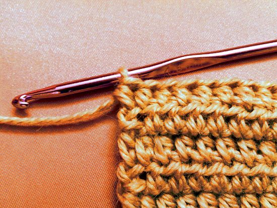
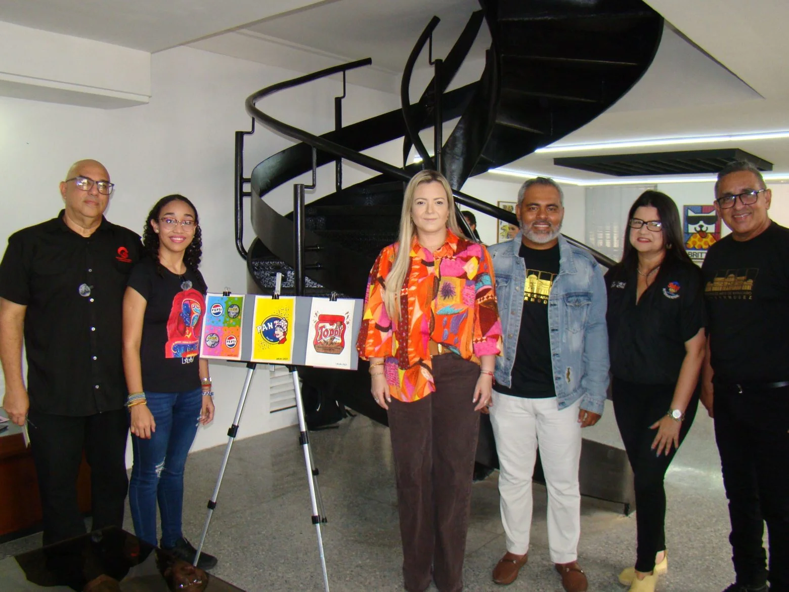

Los talleres en el centro de arte de Maracaibo Lía Bermúdez son actividades formativas que se llevan a cabo para enseñar o perfeccionar habilidades en diferentes áreas artísticas y de artesanía.
TALLERES QUE OFRECEMOS
Ilustrando la Zulianidad
Objetivo: Se enfoca en técnicas básicas de dibujo y coloreado para despertar el talento y la creatividad en los niños.
fecha y hora
11/09/25
10:30 AM
Docentes
Freddy Valbuena
Eduardo Flores

Tejido Crochet
Objetivo: Los participantes deben aprender técnicas de tejido crochet y deben crear piezas.
fecha y hora
27/10/25
09:00 AM
Docentes
José Machado
Randy Rodriguez

Pop Art
Objetivo: aprender de primera mano las técnicas del Pop Art y crear sus propias obras.
fecha y hora
04/11/25
02:00 PM
Docentes
David Alvarado
Andres E
Ilustrando la Zulianidad
Objetivo: "Ilustrando la Zulianidad", se enfoca en técnicas básicas de dibujo y coloreado para despertar el talento y la creatividad en los niños.